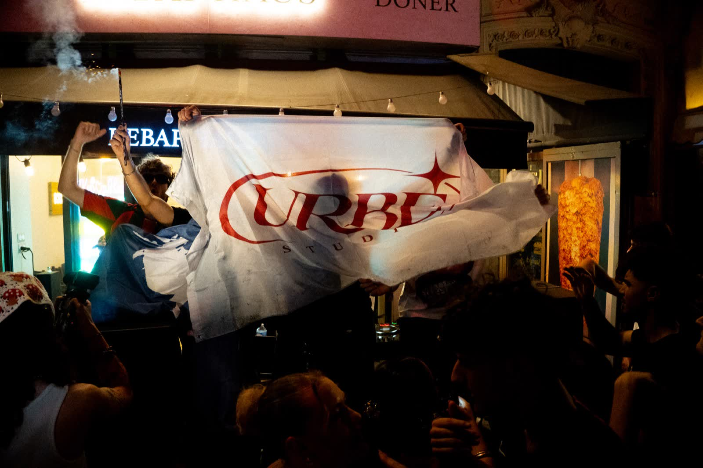

Fête de la Musique 2026 à Paris : quand la passion dépasse les obstacles
Le 21 juin 2026, la Fête de la Musique a une nouvelle fois transformé les rues de Paris en véritable terrain d'expression artistique. Cette année, Urbe Studio a eu le plaisir de participer à l'organisation d'un événement exceptionnel aux côtés de Saphir Session.

Une aventure humaine avant tout
Comme de nombreux organisateurs indépendants, nous avons débuté cette aventure avec une autorisation initialement validée pour un premier emplacement. Quelques jours avant l'événement, un arrêté préfectoral est venu remettre en question l'organisation prévue.
Plutôt que d'abandonner, les équipes d'Urbe Studio et Saphir Session ont décidé de relever le défi. Animés par une conviction simple — faire vivre la musique et offrir une scène aux artistes émergents — nous avons travaillé sans relâche afin de trouver une solution alternative permettant de maintenir l'événement dans le respect du cadre réglementaire.
Une nouvelle scène en plein cœur de Paris
Grâce à la mobilisation de l'ensemble des partenaires, une nouvelle implantation a pu être trouvée au cœur de Paris. Cette nouvelle configuration a permis d'accueillir un line-up particulièrement riche réunissant DJs, artistes émergents, performeurs et talents de la scène indépendante française.
L'objectif était clair : créer un espace de rencontre entre le public et la nouvelle génération d'artistes qui façonnent aujourd'hui la culture musicale française.
Un line-up 100% scène indépendante
THBW · GEMEN · ARTR · MAROUCHENKO · RYFLO · BINO · PIERO · FAELIX · LYBRO · D'ACCORD SIMON · SED · NUPAI · BIG D · TIM KTA · KEI + GUESTS · KRJO · MAÄD · KONI · MOXY · AESPAR
DJs : CH4I B2B DAMASK · PETIT CASTOR · PAKAP · GAOZO · AWA · MAUVAISE ONDE · NO4 · OH DEAR & FRIENDS · ELIFLAME · KDNF · RWOMA · AIR LOOM
Mettre en lumière les artistes de demain
Chez Urbe Studio, nous sommes convaincus que les événements musicaux jouent un rôle essentiel dans le développement des artistes. Au-delà des plateformes de streaming et des réseaux sociaux, la scène reste l'un des meilleurs moyens de créer une véritable connexion entre les artistes et leur public.
Cette édition 2026 de la Fête de la Musique a permis à de nombreux talents de se produire devant plusieurs centaines de personnes dans une ambiance festive, inclusive et accessible à tous.
L'importance des événements indépendants
La Fête de la Musique repose historiquement sur un principe simple : rendre la musique accessible au plus grand nombre et permettre aux artistes amateurs comme professionnels de s'exprimer librement.
Les organisateurs doivent toutefois respecter différentes obligations administratives liées à l'occupation du domaine public, aux autorisations locales et aux conditions de sécurité mises en place par les autorités. Malgré ces contraintes, les initiatives indépendantes restent essentielles pour faire émerger de nouvelles scènes et soutenir la diversité culturelle.
Urbe Studio : au service de la création musicale
Au-delà de cet événement, Urbe Studio accompagne toute l'année les artistes, labels, entrepreneurs et créateurs dans leurs projets audio, musicaux et événementiels. Production, enregistrement, contenu vidéo, captation live, communication digitale ou développement artistique : notre mission est d'aider les talents à transformer leurs idées en projets concrets.
Cette Fête de la Musique 2026 restera pour nous la preuve qu'avec de la passion, de la détermination et une équipe soudée, la musique trouve toujours son chemin.
Un projet musical ou événementiel ?
Enregistrement, mixage, production, captation live — parlons-en.
Nous contacter →